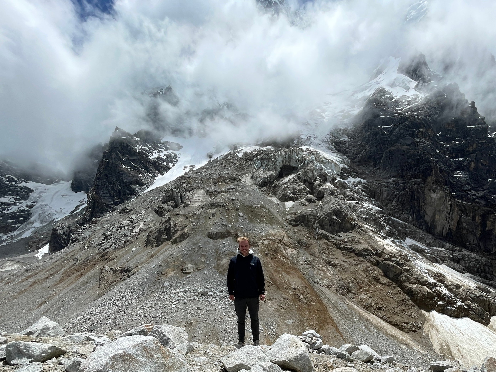
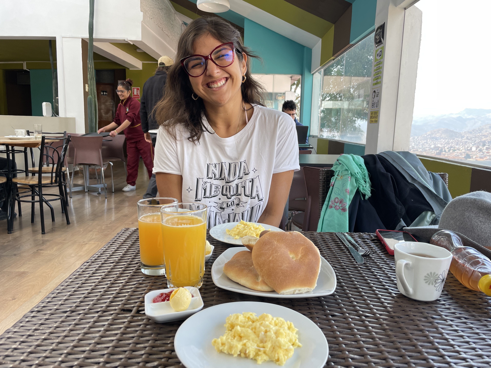
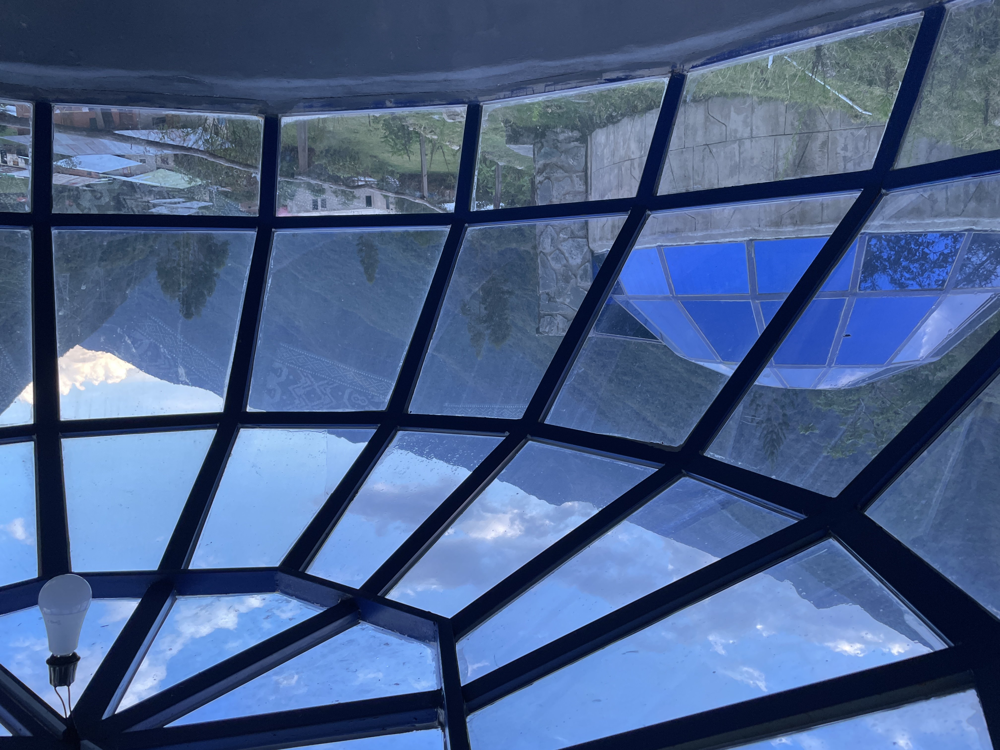
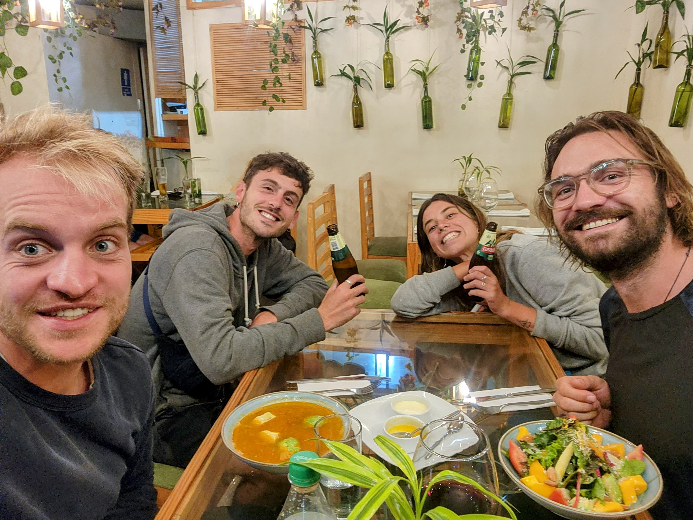

14 Machu
Picchu
Samen met Veronica,
de Salkantay trek en
de keerzijde van het digitale nomadenbestaan
Op de plek waar nu Peru ligt, heerste van 14e tot de 16e eeuw nog het machtige Incarijk (Tahuantinsuyo). Cusco, mijn volgende bestemming was destijds de hoofdstad en het rijk had enorme potentie totdat de Spanjaarden verschillende landen in Zuid Amerika, waaronder Peru, kwamen bezetten. In de 19e eeuw is er onder leiding van de Venezolaanse Simon Bolivar een grote revolutie op gang gekomen die heeft geleid tot de onafhankelijkheid van veel Zuid-Amerikaanse landen. De jaren na de onafhankelijkheid, is er tussen de Zuid-Amerika landen onderling (Peru, Ecuador, Colombia en Chili) onderling nog flink gevochten om te komen tot de landsgrenzen die Peru vandaag de dag heeft.
Cusco, het is er een drukte van jewelste. De buschauffeurs worden bijgestaan door iemand die de buskaartjes verkoopt, die uit de deur hangt en naar voorbijgangers alle haltes roept die nog moeten komen. Alle wegen en buslijnen gaan langs het centrale plein, Plaza de Armas, waardoor het verkeer muurvast komt te staan. Er is geen touw aan vast te knopen. Een metrolijn zou hier een uitkomst zijn, denk je dan. Marktverkopers langs wegen wapperen met lange stokken met plastic, in de hoop dat mensen er stoppen. Ik verblijf de eerste dagen in Packers Hostel en voor het eerst in 4 maanden ontmoet ik weer eens toeristen, zoals een Nederlands koppel dat al drie jaar in een camper aan het rondreizen is. Ze vertellen me over de nieuwste rage onder de digital nomads die met een camper rondtrekken: Starlink, een internetsysteem wat je op je camper plaatst, waarbij je zelfs in het diepst van de jungle nog toegang hebt tot razendsnel internet. Cusco ligt op 3400m hoogte en de eerste dagen had ik hiervan flinke hoofdpijn. In het hostel waren ze zo lief om een kopje coca thee voor mij te maken, waarvan ze zeggen dat het helpt tegen hoogteziekte. Gek genoeg zijn dat dezelfde blaadjes die onder andere door de Peruaanse terroristische groepering VRAEM gebruikt wordt om cocaïne van te maken. De Nederlandse overheid heeft hierdoor een rood reisadvies ingesteld voor de Peruaanse gebieden rondom de Apurimac rivier.
 Veronica, de Peruaanse dame die ik in het noorden van Peru heb mogen ontmoeten, komt een week in Cusco op bezoek en heeft ook het Peruaanse dna. Op iedere hoek van de straat maakt ze een praatje. Soms moet ik even zuchten, maar stiekem ben ik er ook erg blij mee, want steeds weten we precies waar we heen moeten. We nemen de taxi. Veronica zegt me dat ik even achter een lantaarnpaal moet gaan staan zodat ze een betere prijs kan regelen. Het lukt. Er zou nog een persoon bij kunnen en de chauffeur doet er alles aan om die ene plek gevuld te krijgen, door te toeteren naar talloze mensen langs de kant van de weg. We hebben samen een geweldige week en bezoeken onder andere Vinicunca, een schitterende berg, gestreept in zo veel verschillende gekleurde tinten aarde dat ze hem maar de regenboogberg genoemd hebben. Het reizen kost een hoop energie door alle praatjes op straat, de bussen en taxi’s, maar het is het allemaal waard. De omgeving van Cusco is echt waanzinnig mooi.
Veronica, de Peruaanse dame die ik in het noorden van Peru heb mogen ontmoeten, komt een week in Cusco op bezoek en heeft ook het Peruaanse dna. Op iedere hoek van de straat maakt ze een praatje. Soms moet ik even zuchten, maar stiekem ben ik er ook erg blij mee, want steeds weten we precies waar we heen moeten. We nemen de taxi. Veronica zegt me dat ik even achter een lantaarnpaal moet gaan staan zodat ze een betere prijs kan regelen. Het lukt. Er zou nog een persoon bij kunnen en de chauffeur doet er alles aan om die ene plek gevuld te krijgen, door te toeteren naar talloze mensen langs de kant van de weg. We hebben samen een geweldige week en bezoeken onder andere Vinicunca, een schitterende berg, gestreept in zo veel verschillende gekleurde tinten aarde dat ze hem maar de regenboogberg genoemd hebben. Het reizen kost een hoop energie door alle praatjes op straat, de bussen en taxi’s, maar het is het allemaal waard. De omgeving van Cusco is echt waanzinnig mooi.
Hoe bijzonder is het dat je iemand uit Peru ontmoet met wie je zo'n goede klik hebt? Veronica en ik houden allebei erg van reizen en ook om zelf de reis uit te stippelen. Zelfs in haar eigen woonplaats heeft ze allerlei plekken waar ze dolgraag nog eens heen wil. Wat een reislust en ik heb haar ook nog niet over een dingetje horen klagen. In het centrum van Cusco raakten we opnieuw aan de praat met voorbijgangers, die op het punt stonden naar een salsa band te gaan. We sloten aan en hebben daar heerlijk gedanst. Ook toen ik Veronica vertelde over mijn bezoek aan het coworking kantoor was ze enthousiast en wilde ze er graag heen. Zodoende hebben we een dag samen als digital nomads gewerkt tot de deuren om 22.00 sloten. Nu de afstand steeds groter wordt, wordt het ook steeds lastiger om elkaar te kunnen bezoeken zoals we dat in Talara, Tarapoto en Cusco konden doen. Ook loslaten hoort bij reizen, maar deze dame maakt dat niet makkelijk. We zullen zien hoe het verder zal gaan. We hebben samen hele mooie herinneringen en wie weet wat de toekomst brengt.
 Veronica is vertrokken en ik reis naar een dorpje buiten Cusco, in de richting van het gebergte waar Machu Picchu ligt. Bij aankomst in het hostel merk ik dat er nauwelijks andere backpackers zijn. De politieke chaos afgelopen jaar in Peru heeft veel reizigers afgeschrikt. Verschillende busjes brengen mij naar Mollepata, het startdorpje van de 5 dagen durende Salkantay trek, waarbij je de laatste dag de hike afsluit met het iconische bergdorp Machu Picchu. Ik begin in Soraypampa op grote hoogte in de kou en de sneeuw. Je klimt een bergpas over en loopt langs de rand van een ellenlange, gespleten vallei maar liefst 3000 meter naar beneden waarbij je constant het landschap ziet veranderen van droge kale bergen naar mos en struiken tot je zo diep bent afgedaald dat je bij de vochtige dichtbegroeide jungle bent beland. Daar zie ik dat elke boom misschien wel 100 andere planten op zich draagt, zoals verschillende bromelia's die ik eens voorbij had zien komen in de natuurfilms van David Attenborough.
Veronica is vertrokken en ik reis naar een dorpje buiten Cusco, in de richting van het gebergte waar Machu Picchu ligt. Bij aankomst in het hostel merk ik dat er nauwelijks andere backpackers zijn. De politieke chaos afgelopen jaar in Peru heeft veel reizigers afgeschrikt. Verschillende busjes brengen mij naar Mollepata, het startdorpje van de 5 dagen durende Salkantay trek, waarbij je de laatste dag de hike afsluit met het iconische bergdorp Machu Picchu. Ik begin in Soraypampa op grote hoogte in de kou en de sneeuw. Je klimt een bergpas over en loopt langs de rand van een ellenlange, gespleten vallei maar liefst 3000 meter naar beneden waarbij je constant het landschap ziet veranderen van droge kale bergen naar mos en struiken tot je zo diep bent afgedaald dat je bij de vochtige dichtbegroeide jungle bent beland. Daar zie ik dat elke boom misschien wel 100 andere planten op zich draagt, zoals verschillende bromelia's die ik eens voorbij had zien komen in de natuurfilms van David Attenborough.
Eén nacht slaap ik in een grote glazen bol met uitzicht op de sterren. Onderweg ontmoet ik hele vriendelijke mensen uit Amerika, Ierland en België en zelfs een echtpaar uit Barcelona, die wonen in dezelfde wijk waar ik ook heb gewoond. Door de vaste route loop je steeds dezelfde mensen tegen het lijf, met ieder zijn eigen verhaal. Een Amerikaanse soldaat vertelt me, met nog twee dagen te gaan, dat hij er gedropt is en op een speciale missie is. Ook ontmoet ik de 2 meter lange onuitputbare kamperende Duitser Jens die mij het weetje bijbrengt dat de naam van het land Nieuw-Zeeland zijn oorsprong vindt in onze Nederlandse provincie Zeeland. Het Llactapata Lodge is een must go, mocht je hier ooit zijn. Je hebt hier vanaf een afstandje al een prachtig uitzicht op Machu Picchu. En zonder honderden mensen met selfiesticks kun je hier een rustig momentje nemen om het wereldwonder eens goed te bekijken.
Op de laatste dag word ik plotseling, met Machu Picchu al in zicht, voor de tweede keer in korte tijd ziek, waarschijnlijk omdat ik zo eigenwijs ben om overal het water uit de kraan te drinken. Na deze trek zal ik in Cusco zo snel mogelijk een Camelbak waterfilterbidon kopen. Vlak voor de aankomst in Aguas Calientes, het laatste dorpje voor Machu Picchu, loop ik opnieuw de Duitser Jens tegen het lijf en samen halen we voor de volgende dag Machu Picchu kaartjes. Later sluit ook een Iers koppel aan, die zo lief zijn om mij wat tabletjes te geven tegen de reizigers griep. Nu de toeristen uit allerlei hoeken komen aanwaaien, met bluetooth boxen, crop tops en taxibusjes, ben ik maar al te blij dat ik nog met dit viertal van de Salkantay trek samen ben. Een wereldwonder is natuurlijk al iets fantastisch op zich, maar als je dan ook nog eens samen, met zo’n mooie wandeling eraan voorafgaand mag doen, dan maakt dat de ervaring natuurlijk helemaal af.
 Eindelijk is daar dan de grote dag van ons bezoek aan Machu Picchu. Het is met al die toeristische voorzieningen verleidelijk om de bus omhoog te nemen, maar na al die dagen wandelen willen we het natuurlijk te voet afmaken. Jarenlang was de oude Inca stad Machu Picchu nog niet ontdekt tot 1911, toen de stad werd gevonden door de Amerikaan Hiram Bingham. Machu Picchu ligt in een gebied met reusachtige steile bergen en wordt als een hoefijzer omringd door een rivier. Met zijn vieren beklimmen we de berg waar Machu Picchu op gelegen is en het eerste uitzicht is meteen onbeschrijfelijk mooi. De ruïnes, en de puntige bergen op de achtergrond. Het totaalplaatje is zo verschrikkelijk mooi, dat er zelfs even door mijn hoofd schiet, of wat ik zie niet nog wat mooier is dan de Chinese muur of de Taj Mahal die ik ooit al eens eerder zag. Maar die vergelijking moet je natuurlijk ook eigenlijk helemaal niet willen maken. De oude ruïnes laten zien hoe de 750 Inca’s hier vroeger woonden in harmonie met de aarde en de hemellichamen om ons heen. De zon en vogel de Condor hebben een aparte tempel gekregen en er waren solstices, ijkpunten die duidelijk maakten wanneer er het meeste en het minste licht was, waardoor de mensen wisten op welk moment van het jaar ze zich begaven.
Eindelijk is daar dan de grote dag van ons bezoek aan Machu Picchu. Het is met al die toeristische voorzieningen verleidelijk om de bus omhoog te nemen, maar na al die dagen wandelen willen we het natuurlijk te voet afmaken. Jarenlang was de oude Inca stad Machu Picchu nog niet ontdekt tot 1911, toen de stad werd gevonden door de Amerikaan Hiram Bingham. Machu Picchu ligt in een gebied met reusachtige steile bergen en wordt als een hoefijzer omringd door een rivier. Met zijn vieren beklimmen we de berg waar Machu Picchu op gelegen is en het eerste uitzicht is meteen onbeschrijfelijk mooi. De ruïnes, en de puntige bergen op de achtergrond. Het totaalplaatje is zo verschrikkelijk mooi, dat er zelfs even door mijn hoofd schiet, of wat ik zie niet nog wat mooier is dan de Chinese muur of de Taj Mahal die ik ooit al eens eerder zag. Maar die vergelijking moet je natuurlijk ook eigenlijk helemaal niet willen maken. De oude ruïnes laten zien hoe de 750 Inca’s hier vroeger woonden in harmonie met de aarde en de hemellichamen om ons heen. De zon en vogel de Condor hebben een aparte tempel gekregen en er waren solstices, ijkpunten die duidelijk maakten wanneer er het meeste en het minste licht was, waardoor de mensen wisten op welk moment van het jaar ze zich begaven.
 Regelmatig vragen toeristen wat ik doe en dan vertel ik dat ik digital nomad ben. Ze reageren dan vaak, wauw, dat is echt mijn grootste droom. Ik vind het ook echt een geweldige ervaring en ik had het voor geen goud willen missen, maar mensen vergeten vaak, dat het niet alleen maar altijd leuk is wanneer je net zoals ik steeds een maandje op een plek bent. Wat ik op deze blog zet zijn voornamelijk de mooie dingen, maar dat is meestal maar een klein deel van de tijd, waarbij de overige tijd soms best wel uitdagend en eenzaam kan zijn. Ik ben nu 4 maanden aan het digital nomadden. Het steeds van plek naar plek reizen, daar je weg zoeken en weer nieuwe mensen ontmoeten valt soms ook wel eens zwaar. Je vrienden en familie die je alleen via de telefoon kan bereiken, en weinig contacten met mensen voor wat langere tijd. Je hoort niet echt bij de toeristen maar ook niet bij de lokale bevolking. Op het internet lees ik zelfs over een digital nomad burnout, en ik ben niet verbaasd dat het bestaat. Dus wat doen veel digital nomads, die blijven wat langer op dezelfde plek door bijvoorbeeld vrijwilligerswerk te gaan doen. Het zou dus goed kunnen dat ik dit binnenkort ook eens ga uitproberen. Maar daarover vast de volgende keer meer. Bedankt voor het lezen en graag tot de volgende keer!
Regelmatig vragen toeristen wat ik doe en dan vertel ik dat ik digital nomad ben. Ze reageren dan vaak, wauw, dat is echt mijn grootste droom. Ik vind het ook echt een geweldige ervaring en ik had het voor geen goud willen missen, maar mensen vergeten vaak, dat het niet alleen maar altijd leuk is wanneer je net zoals ik steeds een maandje op een plek bent. Wat ik op deze blog zet zijn voornamelijk de mooie dingen, maar dat is meestal maar een klein deel van de tijd, waarbij de overige tijd soms best wel uitdagend en eenzaam kan zijn. Ik ben nu 4 maanden aan het digital nomadden. Het steeds van plek naar plek reizen, daar je weg zoeken en weer nieuwe mensen ontmoeten valt soms ook wel eens zwaar. Je vrienden en familie die je alleen via de telefoon kan bereiken, en weinig contacten met mensen voor wat langere tijd. Je hoort niet echt bij de toeristen maar ook niet bij de lokale bevolking. Op het internet lees ik zelfs over een digital nomad burnout, en ik ben niet verbaasd dat het bestaat. Dus wat doen veel digital nomads, die blijven wat langer op dezelfde plek door bijvoorbeeld vrijwilligerswerk te gaan doen. Het zou dus goed kunnen dat ik dit binnenkort ook eens ga uitproberen. Maar daarover vast de volgende keer meer. Bedankt voor het lezen en graag tot de volgende keer!